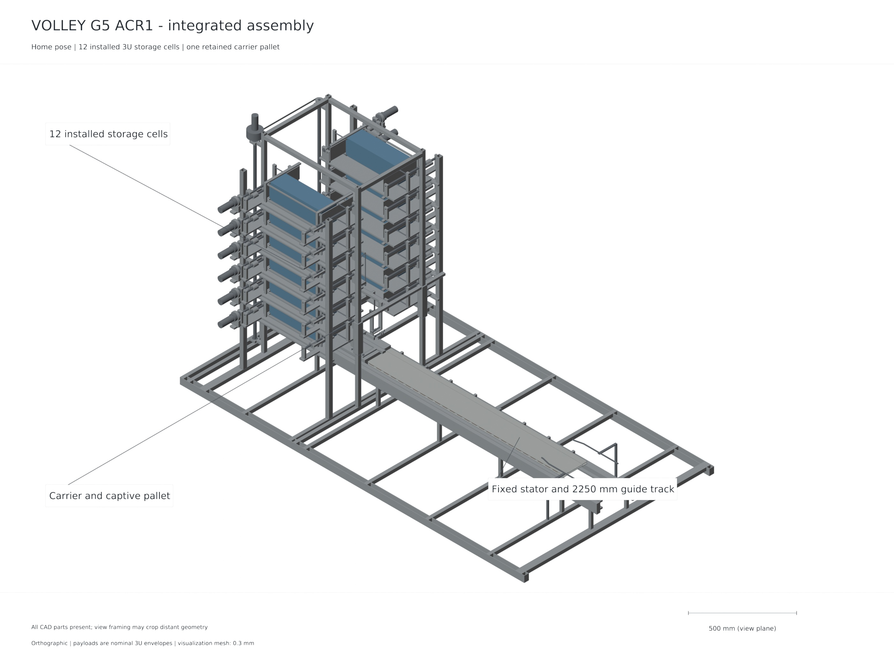

Geometry & custody
Native CAD/STEP, positive transfer, docking and the retained carrier pallet.
Inspect evidenceA reusable electromagnetic carrier, guided payload transfer and individually commanded CubeSat release — evaluated as one integrated computational design.

The handling path connects fixed storage to one reusable launch carrier.
Twelve 4 kg 3U envelopes in two six-level banks. Restrain the inventory; select one cell.
A guided lead screw pushes laterally into the indexed lift. Positive custody transfers the payload and captive pallet.
The lift lowers to the carrier. Prove the pallet locks and withdraw the custody frame before enabling launch.
Command a modeled 1–3 m/s shot. The payload departs; the pallet stays on the carrier through arrest and return.
Coupled release, circuit and arrest cases; these are computational results.
149.55672 kg CAD mass plus 7 kg power/control allowance. Payloads add 48 kg.
All payloads and the retained host evaluated 24 hours after the final release.
The tested uniform 2 m/s family closes within the stated host authority. The ideal ground-pretrimmed spring comparator closes both studied target families; these preplanned cases establish no VOLLEY propellant or initial wet-mass advantage.
Explore the mission result →Native CAD/STEP, positive transfer, docking and the retained carrier pallet.
Inspect evidenceFinite geometry, moving mass, circuit behavior, energy and arrest.
Inspect evidenceTwelve synthetic full-state targets and the host-assisted spring comparison.
Inspect evidenceReport, source scene, figures, numerical outputs and reproduction routes.
Inspect evidenceEarlier force, fit and mass findings remain dated evidence.
Corrected integrated twelve-3U configuration and dependent computational evaluation.
Separately identified mixed-size handling studies and hardware correlation gates.


The integrated twelve-3U ACR1 architecture has editable CAD/STEP, nominal motion and custody checks, finite motor and coupled shot models, and a same-input host-assisted mission comparison.
Instrumented hardware correlation, environment testing and payload/host qualification remain future work. Gen6 mixed-size studies have their own configuration and evidence.
Integrated system, operating sequence and engineering evidence.
EngineeringAlternative architectures, trade rationale and exploratory studies.
Research vaultAcademic report, presentation and chapter evidence.
Academic recordManuscript, methods, data and reproducibility.
Manuscript